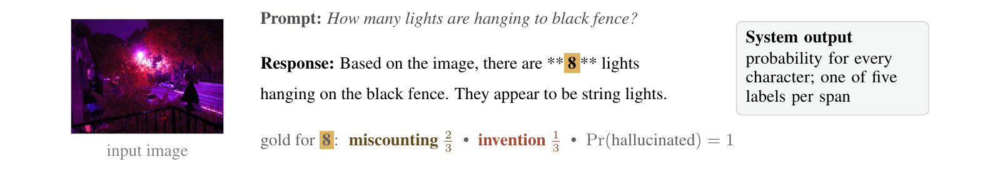

Research
Research on agents, reinforcement learning, and large language models.

Rubric Decoupled Advantage Normalisation GRPO is a rubric-based reinforcement learning repository for aligning LLMs with complex, open-domain instruction-following tasks. It improves performance on public instruction-following benchmarks.
Hugging FaceQwen3-4B-RDAN-GRPO

Investigated position bias in long-context retrieval across Transformer, Mamba state-space, and hybrid architectures. Found that Transformers favor evidence near both context boundaries, while state-space models mainly favor evidence near the end. Controlled experiments showed that effective context use depends jointly on architecture, model capability, task, and prompt design.

Scorer-aware serialization for multilingual vision-language hallucination detection: per-character hallucination probabilities and categories in English, French, Italian, and Chinese. A deliberately text-centric detector ensemble with a clean-document gate; per-language bests clear the baseline on both official metrics.